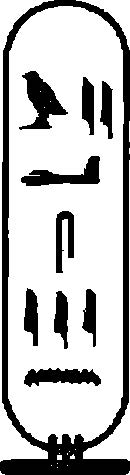

Meşaleleri tekrar düzenledim ve duvar süslerine göz gezdirdim. Bu, hikayesini anlatmadan önce kayanın yüzeyini sıvayan profesyonel bir ressamın çalışmasıydı. İlk resim önünde bayrak taşıyıcıları ve savaş arabalarındaki diğer subayların ilerlediği bir Firavun'u betimliyordu. Bu insanlar, Firavun'la yüz yüze çatışmak için öne atılmış, ancak şimdi nehir kıyısındaki büyük yamaç kalesinin koruması altına girme yolu arayan, yere düşmüş, koyun postuna bürünmüş bir düşmanın peşindeydiler. Kale yüksek duvarlar ve kare pencereli kuleler tarafından korunmaktaydı. Hemen önünde, yakalanıp tutuklanan düşmanlardan bazıları kazığa oturtuluyordu. Diğerleri yere uzanmışlar, el ve ayak bilekleri bronz kelepçelerle bağlı, canlı canlı derilerinin soyulmasını bekliyorlardı.
Bu dehşet yüklü tören kale sakinleri tarafından izlenmekteydi.
Okların delip geçtiği askerler duvarlardan düşüyor, Firavun'un piyadeleri uzun kalkanların gerisinde ilerliyorlardı.
İkinci resimde, Firavun, güneş şemsiyesini taşıyan görevliyle birlikte, esirleri sorguluyordu. Firavun'un arabasının önüne yığılan kesik başların sayılması yoluyla, katledilen düşmanların bir çetelesi tutulmuştu. Üçüncüsünde arka fon değişmişti, resme bir kısmı dik, diğerleri yüzeysel yamaçlar hakimdi. Koyun derisine bürünmüş, Firavun'un askerleri tarafından kovalanan düşman, bir kale önüne gelmişti; bu yapının bahçe kapıları ışıl ışıl aydınlatılmıştı, parlak kızıl alevler aç halde havayı yukarı doğru yalamaktaydı. Diğer küçük resimlerde, peştamalları hariç çıplak olan savaşçılar Firavun'un alaylarının karşısında yuvarlak kalkanlar ve uzun kargılar taşıyorlar, sanki kafasma boynuz takmış gibi görünen bir savaşçı tarafından yönetiliyorlardı. Son resimde, kaleler alınmıştı; her yer ceset doluydu, kesik başlar direklere geçirilmişti. Firavun ve arabacıları oradan ayrılmaktaydılar; arkalarında düşmanlarının kesik kafalarını sepetlerinde taşıyan köleler ve ganimetlerle dolu yük arabaları ilerliyordu.
Resimleri büyük bir dikkatle inceledim. Djarka sessizce arkamda dikiliyordu.
"Bunlar bir Mısırlı tarafından çizilmemiş," dedim. "Adam bir Mısır zaferini kutlamıyor, kendi halkmın yenilgisini resmediyor."
Düşmana bir kez daha baktım.
"Bunlar Hyksos," diye fısıldadım. "Bu resimler Sırtlan Mevsimi'ni, Firavun Ahmose’nin Hyksos'ları Mısır'dan dışarı sürdüğü dönemi betimliyor. Bu hikayeyi biliyorsun, öyle değil mi Djarka? Hyksos'ların vahşi ve ahlaksız bir düşman, çeşitli kesimlerden gelen toplama bir insan topluluğu, çoğu Canaan 'dan gelen çeşitli kabilelerin oluşturduğu bir paralı asker ordusu olduğunu biliyorsundur."
Bu geçici kabri işaret ettim ve Djarka’yı omzundan kavradım.
"Bana buradan bahsetmeliydin!"
Elimden kurtulmaya çalışmadı, burnundan aşağı süzülen ter damlasını sildi.
"Bu resimlerin ne anlattıklarını biliyor musun Djarka? Hyksos'lar arasında Canaan'dan gelen çoban krallar vardı, bunlar saldırgan ve savaşçıydılar. Bu resimler onların ülkeden nasıl çıkartıldıklarını gösteriyor. Bu krallar senin halkındı! Canaan’a, müteakip Firavun'ların onların peşlerine düştüğü yere geri döndüler.
Savaş başarısızlıkla sonlanınca, senin halkın, şu çoban krallar, Apiru'lar, ki Israar kabilesi de onların arasındaydı, silahlarını bıraktılar, seyyah ve sığırtmaç olarak Mısır’a geri döndüler. Bu kez Firavun'un himayesine girdiler. Yıllar geçti, hatıralar donuklaştı.
Beraberlerinde Tanrı ya da Tanrılar'ını da getirmişlerdi." Omzunu bıraktım. "Bu resimlerde yer almıyor, ancak buna benzer bir grup Akhmin’e yerleşti. Mısırlılardan daha Mısırlı oldular. Zenginleştiler ve güç kazandılar, yüksek mevkilere yerleştiler. İçlerinden teki, Leydi Tiye, büyük Firavun Amenhotep IIl'ün dikkatini çekti ve ölümsüz sevgisini kazandı. Artık halkının elinde bir fırsat vardı. Kraliçe Tiye, tek, her şeye kadir, gözle görünmez Tanrı inancıyla, kocasına halkının gizli bilgisini öğretmeye başladı. O günlerde, orada betimlenen her şey geçmiş, halk arasında anlatılan müphem hatıralardı. Muhteşem Amenhotep, güzel genç karısı ile bir zamanlar Mısır’ın dehşete bürünmesine sebep olan çoban krallar arasındaki bağlantıyı hiçbir zaman fark etmedi. Kraliçe Tiye'-
nin Aten maskesi altında Tek Tanrı ’ya tapınmasını ya da küçük oğlu, kendisinin reddettiği evladı, benim karşılaştığım kişi, daha sonradan Akhenaten’e dönüşen o Maskeli Kişi için bunu bir ya şam şekli haline getirmesini umursamadı."
Gidip kayalık bir duvar çıkıntısına oturdum, kafamı kaldırdım, Djarka’ya baktım.
"Merak ediyorum da Djarka, General Horemheb ve Rameses burada olsalardı bu resimlere ne tür bir anlam verirlerdi. Apiru'nun çoban kralların torunları, lanetlenmiş Hyksos'ların müttefikleri olduğunu hemen fark ederlerdi. Tek Tanrı, Mesih, seçilmiş halk olma anlayışlarıyla Mısır’a karşı büyük bir tehlike oluşturdukları sonucuna varırlardı. Apirular’a savaş ilan ederlerdi. Halkının kökünü kurutmak için, Canaan’da en acımasız mücadeleleri başlatırken, onları öldürürlerdi. Bunu biliyor muydun!"
Djarka gitti, ok kılıfını ve güçlü kompozit yayını aldı.
"Ne yapacaksın Djarka? Beni öldürecek misin? Yoksa korkutuyor musun? Memphis'deki General Horemheb’e ya da Thebes'deki Amun ruhbanlarına mesaj mı yollayacağım? Bu kutsal yer, halkının Sinai'yi geçip Mısır' a giderken durakladıkları bu mekan hakkında yani? Geçmişte yaşananları anımsayabildikleri, ölülerini gömdükleri bu yere ilişkin? Meryre ve Lord Tutu bu yüzden buraya geldiler! Onların senin kabilenden olup olmadıklarını bilmiyorum; eğer değillerse bile, onlar senin halkının görüşlerinin en eğitimli Mısırlılar’ın ruhlarının dahi hala nasıl aklını çeldiğinin en başta gelen örnekleridirler. İşte, Lord Ay da Nakhtimin’i bunu keşfetmesi için gönderdi. Elindekiyle ne yapmak istiyorsun Djarka?"
Djarka yayının telini çekti. "Siz olsanız ne yapardınız lordum?" Yüzünün gölgeler arasında gizli kalması için geriye doğru bir adım attı.
"Arkadaşımın, oğlum gibi benimsediğim bir adamın beni öldürmeyi düşündüğünü düşününce öfkeleniyorum."
"Sizi tehdit etmiyorum," Djarka ışık hüzmesinin altına geldi,
"sadece kutsal olan her şey üzerine yalvarıyorum ki ... "
"Onu yok etmemi mi istiyorsun? Tabi ki bunu yapacağım.
Bu vadi artık kirlendi. Paralı askerlerin arasından neşeli bir oğlanın tüm bu mağaralar, Lord Mahu ve Djarka’nın bunlardan tekine karşı nasıl özel bir ilgi beslediği hakkında boşboğazlık etmesi an meselesi. Er ya da geç, General Rameses buraya alaylarını gönderecektir ve askerler de burayı bulana kadar vadilerin tümünü karış karış arayacaklardır. Dolayısıyla Djarka, o yayı yere bırak ve buraya mümkün olduğunca çok sayıda yağ tulumu getir."
Hızlı bir şekilde çalıştık. Akşamın erken saatlerinde o mağarayı ve içindeki her şeyi iyice ıslatmıştık: mumyalar, Tutu ve yoldaşlarının cesetleri ve hepsinin ötesinde o resimler. Meşaleleri içeri attık ve vadi tarafı alevler arasında kaldı, ateş dışarı taşıyor, etraftaki katırtırnakları ve çalıları yakıyordu. Koyu mavi renkli gökyüzüne yükselmeden önce, siyah duman bulutlan vadinin ilerisinde kıvrıla kıvrıla yol aldı. Bu ateşin ne kadar etkin olduğunu görmek için beklemedim; kampa geri dönmeye ve ertesi sabahki yürüyüşe hazırlanmaya can atıyordum. Askerler huzursuzluktan yerlerinde duramıyorlardı, oradan ayrılmayı umutsuzca istiyorlardı, yorgundular, içlerinden teki haykırdı, ölüp korkunç gece yaratıklarına yem olmuştu.
Gözcü sayısını iki katına çıkarttım. Muhafızlarım korkusuz vahşi bir hayvan tarafından yönlendirilen büyük bir sırtlan sürüsü gördüklerini raporlamışlardı; askerler ona ateş ya da silahlarımıza karşı çok az bir korku beslediği için Seth lakabını taktılar. Bu kadar çok miktardaki et, pişirilen yemeklerin tatlı kokusu ve taze suyun cazibesi bu hayvanları tam bir öldürme çılgınlığına sürüklemişti.
Gecenin üçüncü nöbet diliminde, sırtlan sürüsünün tümü kampa saldırdı. Eğer batıl inançlı olsaydım, hayvanların bir tür şeytani ruh tarafından sahiplenildiklerini düşünürdüm: Büyük bir beceri ve zekayla saldırdılar. Kapının en zayıf nokta olduğuna karar verdiler ve arabalar arası boşlukları kullandılar. İlk saldırılarında iki muhafıza odaklandılar, arabaların üzerine çıkarak onları henüz alarm verilemeden çekip alaşağı ettiler. Sebep oldukları boşluk diğerlerinin de kampa girmesine olanak tanıdı. Çığlıklarla, çalınan boru sesleriyle uyandım, askerler bağırıp çığlıklar atıyorlardı. Çadırımdan dışarı fırladım, Djarka da beni takip etti, birden korkunç şekillerin farkına vardım. Bize çok fazla saldırmadılar, daha ziyade kendilerine at hatlarına doğru yol açmaya çalıştılar, böylece çok daha kolay bir ava erişmiş oldular. Çıkan sesler ve manzara dehşet yüklüydü. Atlar korku şiddetleri yükseldikçe çıldırdılar, bir kısmı kampta gezinirken diğerleri sürünün geriye kalanının beklediği çöle doğru koşturdular. Bu tiz çığlıklar ve sıcak sıcak fışkıran kanlarla dolu bir geceydi. Sırtlanlar kurnazdı. Tek başına olan herkese saldırdılar ancak mızrak, kalkan ve uçları keskin kancalı oklarla donanmış halde bir araya gelip çember ya da kare oluşturacak kadar aklı başında olanlardan mümkün olduğunca uzak durdular.
O gece altı adam ve yaklaşık yirmi at kaybettik. İlerleyen zaman diliminde altı hayvan daha yok etmek zorunda kaldık, kampı temizlemek yaklaşık bir saatimizi aldı. Sürüden liderleri de dahil olmak üzere en az sekiz hayvan öldürdük ama onlar zaten hedefleyerek geldikleri şeyi almışlardı. Kampı hemen toplamaya ve oradan kaçmaya karar verdim. Şafak vaktinde, o toprakların fatihleri olan sırtlanları arkamızda bırakarak, bir gece önce gerçekleştirdikleri saldırının tüm dikkatlerini dağıtacağını ümit edip, çoktan uygun adım yola düşmüştük. Arabalarımızın büyük çoğunluğunu orada bıraktık, sadece günün ortasında sıcaklık çok yoğun bir hal alınca insanlara su dağıtmak için durduk. Gece çok kısa bir dinlenmenin ardından gündüz yolumuza devam ettik; askerleri yatıştırmanın ve herhangi bir emri onlara kabul ettirmenin tek yolu Gri Şafak Vadisi ile aramıza mümkün olduğunca büyük bir mesafe sokmaktı.
Dört gün süren zorlu bir yürüyüşün ardından askerler yorgunluktan griye dönüşmüşlerdi, yırtıcı hayvanlar etrafımızda dolanmaya başlamıştı, ancak bayrak taşıyıcılar arasındaki en vesveseli adam bile asıl tehlikenin geride kaldığını kabul etti.
Tuthmosis II’nin büyük taş anıtının, o mekanın Mısır’ın gücü altında olduğu ve suyunun Firavun' a ait olduğunu gösterdiği bir vahada dinlendik. O kadar susuz, sıcaktan bezmiş ve yorgunduk ki, burası Ölüler Dünyası’nın Yiyicileri'ne ait olsa dahi umursamazdık. Dinlenip kayıplarımızı saydık: En azından iki düzine asker ve hayvanlarımızın yaklaşık üçte birini kaybetmiştik. Bir şeyler olduğunu öğrenen ve gücümüzün dikkate değer derecede zayıfladığını fark eden çöl yırtıcılarınm üzerimize gittikçe odaklanan ilgilerinden telaşa düşerek, yürüyüşümüze düzene benzer bir oluşumla devam ettik. Askerlere savaş giysilerini kuşanmalarını ve sanki her an bir saldırı bekliyorınuşçasına ilerlemelerini emrettim. Çöl gezgincileri bunu fark etti ve ortadan kayboldu. Er ya da geç, bizi yan cenahımızdan taciz etmek için tekrar ortaya çıkacak, var olabilecek herhangi bir zafiyet arayacak ya da sürüden ayrılan kimse var mı diye bakacaklardı.
Gri Şafak Vadisi'nden ayrıldıktan beş hafta sonra, doğu kayalıklarına ve Aten Şehri'ne uzanan kayalık, çorak alana ulaştık.
Şehre şafak vakti girdik, hemen o an ters giden bir şeyler olduğunu fark ettim. Sokaklar yeterince kalabalıktı, Pazar yerleri güne hazırlanıyordu, ancak esrarlı bakışlar ve mırıltılar oradaki varlığımızın pek takdir görmediğini gösterdi. Saray takviye edilmiş ve koruma altındaydı. Nebamun, Kızıl Topraklar’da olup biteni sormaktansa, şehirde yaşananları bize aktarmakla çok daha ilgili görünüyordu. Hemen Prens’i görmeyi talep ettim. Onun güvenlik ve sağlığı konusunda tatmin olduktan sonra, bahçede Nebamun ve subaylarıyla bir araya geldim. Bir firavun inciri ağacının altında, gölgeye daire şeklinde yerleştik. Hem Djarka hem de ben banyo yapıp tıraş olmuş, toz ve kirden arınmıştık. Kendimi çok yorgun hissediyordum, kol ve bacaklarım sızlıyordu.
Yaşlı albay, "Askerlerimle konuştum," diye sözlerine başladı. "Bana o katliam yerine yaptığınız seyahati anlattılar."
"Lordum Ay ve Kraliyet Çemberi," diye karşılık verdim,
"kısa bir süre sonra konuya dair bilgilendirilecekler."
Nebamun, subayları bana ters ters bakarken, hakir gören bir tavırla hafifçe gülümsedi. İçlerinden teki konuştu.
"İyi askerlerimizi ve atlarımızı kaybettik."
"Atlar ölürler!" diye lafı yapıştırdım. "Diğer yandan, gerekmesi durumunda hayatlarından vaz geçmek Firavun'un askerlerinin de görevidir."
Nebamun, "Ne buldunuz?" diye ısrarcı bir tavırla sordu. "Bu tür ölümlerin yaşanması gerekli miydi? Bana kötü ruhların hakim olduğu bir sırtlan sürüsünden, iskeletlerden, korkunç bir katliamdan bahsettiler, doğru mu? Vadinin yanında yükselen yamaçta yer alan bir mağarayı ateşe verdiğinizden söz ettiler."
"Söylediğim gibi," tatlı bir üzümü ısırdım, "Lord Ay’ı bilgilendireceğim."
"O çoktan size mektuplarını gönderdi."
"Onları gördüm," dedim. "Yazmanlarım onları hazır ettiler.
Çoğu birbiriyle aynı: şunu yapma, bunu yapma. Benim bilmek istediğim Albay, bu şehrin ne kadar güvenli olduğu?"
"Lord Ay ve onun Kraliyet Çemberi," Nebamun saldırganlaştı, "yaptığınız uzun yolculuğu onaylamamıştı, tıpkı General Horemheb ve Rameses gibi. Esas noktayı göremediler: Prens ve
Kraliyet Maiyeti tehdide maruz bırakıldı."
"Ki şu durumda Albay," diye sert bir karşılık verdim, "ben size onlardan çok daha fazla güveniyorum. Şimdi, bu kadar ağız dalaşı yeter. Şehir güvenli mi?"
Nebamun, "Şehir huzursuzluk kaynıyor," diye yanıtladı. "Subaylara ve sizin askerlerinizin bazılarına karşı saldırılar yaşanıyor.
·Hepsinin de birahanelere ya da Pazar yerlerine gitmelerini yasakladım; saray kapılarının dışında çeteler öbekleniyor."
"Ne istiyorlar?"
"Şehrin güvenli olacağına, sizin lordum ve tabi ki Ekselanslarının onları terk etmeyeceğinize dair garanti istiyorlar. Rızklarından, Mısır’a olan sadakatlerinden bahsediyorlar. Buraya, ölüme terk edilecek bir şehirde yaşamak için göçmediler."
"Ama haklılar. Siz de Albay, tıpkı benim kadar biliyorsunuz ki, Lord Ay, Thebes’i düzene sokunca, Prens, Prenses Ankhesenamun ile evlenmek ve İki Diyar Lordu hükümdarlığına geçmek için oraya geri dönecek, bunun herkes farkında."
Djarka, "Bu huzursuzluk ne kadar tehlikeli?" diye sordu.
Nebamun ellerini açtı. "Ara sıra yaşanan saldırılar, gürültülü itirazlar, fırlatılan taşlar. Bizim açımızdan pazarlara ürün götürmek gün geçtikçe daha da zorlaşıyor. Eğer yanınızda asker korumanız yoksa, size saldırırlar. Lordum Mahu, şehri terk etmeli, buradan mümkün olduğunca çabuk gitmeliyiz."
Hazineleri, kendi şahsı mallarımı, özel bahçeme gömülü gizli doküman sandığımı düşündüm.
Nebamun, "Her şeyi burada bırakıp gitmeyi öneriyorum,"
diye ısrar etti. "Savaş mavnaları hazır. Tek bir gün içerisinde gidebilir, şehri çürümeye bırakabiliriz."
"Yani Albay, General Horemheb' den de çeşitli mesajlar aldınız. O nasıl?"
Nebamun'un subaylarından teki küstahça, "Şehrin ölmesini ve Aten’in anısının unutulmasını istiyor," dedi.
"Söylediğiniz şeyi düşüneceğim."
Djarka ve ben odalarımıza döndük. Prens uyuyordu. Ankhesenamun ve Amedeta bitkin bir halde odaya girdiler. Yeni bir takım parfümler deniyor olmalıydılar, rayihaları tıpkı bir tütsü gibi havada asılı kaldı. Parıltılı mücevherler içerisinde göz kamaştırıcıydılar. Ankhesenamun'un heceleri hafifçe birbirine karışıyordu, her ikisi de aşırı derecede sarhoştu.
"Mahu Amca," diye peltek peltek konuştu, "hoşgeldin. Seni özledik, öyle değil mi Amedeta?"
Nedime bana gözleriyle güldü. Ankhesenamun ayak ucunda ilerledi ve dudaklarıma dokundu.
"Kuru ve çatlamışlar, öpülecek gibi değiller, öyle değil mi Amedeta? Gerçekten daha dikkatli olmalısın." Kedi gibi bana aptal aptal sırıttı, sonra omzunun üzerinden arkasına bakarak yürüyüp uzaklaştı, yüzünde arsız, terbiyesiz bir gülümseme vardı. "Daha dikkatli olmalısın Mahu Amca ve Büyükbaba ne istiyorsa onu yapmalısın."
Djarka, kapıyı tekmeyle Ankhesenamun'un arkasından kapatırken, "Ne demek istiyor?" diye fısıldadı. Her zamanki gibi, uzakta olduğu için sabırsızdı. Seyahatin son günleri boyunca Meıi hastalanmış, hafif ateşlenmişti, bu da onu biraz uyuşuk yapmıştı.
Saraya varır varmaz Djarka, Pentju'nun yardımını istemişti; doktor kızı muayene etmiş, bunun iki günlük dinlenme ve bardaklar dolusu temiz suyla geçirilemeyecek bir şey olmadığını ifade etmişti. Djarka, "Lordum," diye ısrar etti, "Leydi Ankhesenamun sizi uyarıyordu."
Daldığım hayallerden sıyrıldım. "Evet, evet, uyarıyordu!
Burada bekle!"
Bahçeme çıktım ve doğrudan selvi koruluğuna gittim. Büyük bir dikkatle işaretlediğim ağacın altına vardım. Kayayı iteledim ve yeri kazdım. Sandık oradaydı ama kilidi kırılmışı. İçi boştu. Diz çöküp lanet okudum. Gaspçının kampında bulduğum dokümanların hepsi gitmişti. Sandığı fırlatıp attım ve hissettiğim korku dalgasını kontrol altına almaya çalıştım. Ankhesenamun ve Amedeta dokümanları bulmuş, ardından da yok etmiş olmalıydılar.
"Gitmişler mi?"
Hızla arkama döndüm. Djarka korunun hemen girişinde dikiliyordu.
"Tabi ki gitmişler! Bu da Lord Ay’ın bir entrika çevirdiği anlamına geliyor."
"Ne?"
"İşten alınmam, hatta öldürülmemi. Kraliyet Çemberi daralıyor. Meryre, Tutu, General Rahınose ve Atenciler gittiler. Horemheb ve Rarneses Memphis ’de askercilik oynamakla meşguller. Maya ve Huy mu? Pekala, onlar satın alınabilirler. Sobeck kendi işleriyle meşgul, dolayısıyla sen ve ben bundan sonra ilk gidecek kişileriz. Ay’ın tek bir arzusu var, kendisi Mısır'daki gerçek güç haline gelirken Tutankhamun 'u tahta oturtmak. Bu şehrin terk edilmesini, Atencilerin yok olmasını istiyor. Geçmişi unutmak ve geleceğe odaklanmak istiyor." Ayağa kalktım. "Beni daha önce tutuklattıracaktı ama bunu yapabilecek güçte değildi, elimde onun vatan hainliğini ispatlayacak kanıtlar vardı. Şimdi hepsi gitti."
"Horemheb ve Rameses seni koruyacaklardır."
"Onlar da diğerleri gibi satın alınabilirler. Lord Ay çok zekice davranacaktır. Mısır için yeni bir gün doğuyor. Mahu geçmi şin bir parçası, dolayısıyla onu unut."
"Lordum Mahu, lordum Mahu." Bir hizmetkar koşturarak geldi. "Albay Nebamun sizi görmek istiyor."
Nebamun küçük avlulardan tekinde bekliyordu. Askerlerinden teki bir esir getirmişti, bu boş boş gezinen o kutsal adamlardan tekiydi, sopayı andıran bacak ve kollarıyla sıska bir yaratıktı, derisi güneşten esmerleşmişti, o zayıf suratı yara ve deliklerle çopur çopurdu. Hafif kaçık gibiydi, askerlere ilişkin en ufak bir korkusu yoktu.
Nebamun, "Onu sarayın dışında bulduk," dedi. "Onu yakalamayı epeydir istiyorduk. Kahin olduğunu söylüyor."
Adam, "Doğudan gelen bir ses," diye bağırdı. "Batıdan gelen bir ses. Kuzey ve güneyden gelen bir ses."
Bağırarak, "Kimin sesi?" diye sordum.
Adam, belinin etrafındaki kirli ceketini çekiştirerek, hazırlandı. Dayandığı değneği sıkı sıkı kavradı. Nebamun'un askerlerinden-teki teperek bunu adamın elinden yere düşürdü ama kahin olduğunu iddia eden adam bunu umursamamayı tercih etti. Kemikli parmaklarından tekini uzatarak bana doğru yaklaştı, tırnağı pislik içerisindeydi.
"Mahvoluşun Sesi!" dedi. "Bu sesi dinleyin. Tanrılar öyle buyuruyor. Bu doğu memleketinden tiksiniyorum. Bu yıkım yerine girmeyeceğim. Getirdiğiniz teklifler benim açımdan tiksindirici.
Bunun içinden geçeceğim. Burada kalmayacağım. Ateşi toz takip edecek, ses ortaya çıkacak, şehir kötü sona ulaşacak."
"Sen de kimsin?" diye sordum.
"Ben bir kırlangıcım. Ben bir kırlangıcım," diye yanıtladı.
"Akrep Tanrıça’nın ulağıyım. Saz Arazileri'nden sırlar getiririm.
Bu şehrin kötü sonla karşılaşacağını ilan ettim."
Adamın parmağını yakalayıp kıvırarak, "Sana kim para verdi?" diye sordum. Kahin ağlamaya başladı. Parmağını burkmaya devam ettim; acıyla bağırdı ve dizlerinin üzerine çöktü.
"Para almadım lordum. Değneğimi aldım ve gökyüzünü süpürdüm. Görüşlerim var: Şehir kötü sona ulaşacak."
Adamın deli gözlerine baktım ve nefesinden yükselen ağır bira kokusunu fark ettim. "Eğer ulaşacaksa," dedim, "o zaman en iyisi sen buradan uzaklaş. Albay Nebamun, onu nehre atın!"
O gece bir ayaklanma yaşandı. Meryre’nin adamlarının bu işte parmaklarının olup olmadığından emin değilim. Liderler, Marunet ve Pera adında, su mermeri madenlerinden büyük servetler elde etmiş iki tüccardı. Prens’i ele geçinneyi, onu rehin tutmayı, Kraliyet Çemberi'ne taleplerini iletmeyi planlamışlardı. Maksatlarının ilk kanıtı, muhafızlarımızı duvardan duvara döne döne yollayan sapanlar, bunları takip eden ok yağmurlarıydı. Kapıları zorlamak için evin tekinden ahşap bir sütun alınmış ve yük arabasına yüklenmişti. Adamlar tam güneş doğarken defedildiler. Kulelerin tekinden, okçularımızın korkulukların üzerinden uzanıp saldırganları dağıtmalarını seyrettim. Cesetler kan içerisinde etrafa saçılmışlardı, hepsi de oklarla delik deşiktiler; diğerlerinin kafatasları topuzlarımızla ezilmişti. Kuleden gördüğüm manzara pek de iç açıcı değildi: Şehrin çeşitli yerlerinde çoktan duman ve alevler yükselmeye başlamıştı.
Nebamun, "Gangster çeteleri bizi kuşatmak amacındalar; geri çekilmekten başka seçeneğimiz yok," diye seslendi.
Yiyecek ve şarap getirilmesini istedim. Saldırganların, saraya uzanan ana yola açılan yan sokaklara geri çekilişlerini seyrederek yedim ve içtim. Arada sırada, silahlı asker grupları, gölgeler arasına geri kaçmadan önce, birkaç ok atmak için ortaya çıkıyordu. Dokuzuncu saatte, Marunet ve Pera, Şehrin Konseyi olarak adlandırdıkları bir haberci gönderdi, bu sanki bir subaymış gibi kılıcını sallayarak bahçe kapısına kasıla kasıla yürüyen yüzsüzün tekiydi. Giriş izni istedi. Onu içeri aldım ama hemen ardından tutuklattırdım.
"Sebep?" diye söylendi.
"Vatana ihanet!" diye yanıtladım.
İşkenceye maruz bıraktığımızda o kadar da kibirli değildi.
Askerlerim bacak ve kol derilerini yüzmeye başladı, adam itirafta bulunmaya razı oldu. Liderlerinin isimlerini dile getirdi ve içimi ürperten bir şeyi de ağzından kaçırdı: Delege-adamın adını unuttum-attıkları adımların saraya ne kadar büyük bir destek oluşturduğunu dile getirdi.
"Hangi saray?" diye sordum.
Adam, "Tabi ki bu saray," diye lafı patlattı, dudakları kan kaplıydı. Sonunda bana anlatabileceği her şeyi aktardığına ikna oldum. Muhafıza onu öldüm1esini ve kafasını duvardan dışarı fırlatmasını söyledim.
Zincirler Evi'nden dışarı büyük bir hışımla çıktım ve kadınlar bölmesine gittim. Ankhesenamun ve arkadaşı kötü ruhlu Amedeta iç odadaydılar, çift kişilik bir tabureye oturmuşlardı. Ayaklanma ve yaşanan karmaşadan haberdardılar ama yine de sanki dünyada hiçbir şey umurlarında değilmiş gibi birbirlerinin tırnaklarıyla ilgilenmekteydiler.
"Mahu Amca." Ankhesenamun kafasını kaldırdı. "Tedirgin görünüyorsun. Yoksa endişeli misin? Sana buradan ayrılmamız gerektiğini söylemiştim." Onu tokatlayabilirdim. Amedeta bacaklarını üst üste atmış, onun yanında oturuyordu, kedi gözleri gülümsemekteydi.
"Dokümanlarını nerede?"
"Mahu Amca, sen neden bahsediyorsun?"
"Neden bahsettiğimi biliyorsunuz."
Elimi kaldırıp kenara çekildim, seslenip muhafızlarımı çağırdım. Koşarak içeri doluştular, kılıçları çekiliydi. İki civelek kız ayağa fırladı. Ankhesenamun böylesi bir davetsiz girişe itiraz etti.
"Endişelenmeyin," diyerek yatıştırdım. "Güvendesiniz."
Askerlere odayı aramalarını emrettim. Ankhesenamun ve arkadaşı olan kaltak küfürler savurarak bağırdılar. Gürültü patırtı bir hizmetkarın koşa koşa gelmesine sebep oldu, muhafızlarımın çekili kılıçlarını görür görmez adam büyük bir telaşla geri çekildi.
Muhafıza her yeri araştırmasını emrettim. Ankhesenamun ve Amedeta, olup bitenden ellerini çekip, taburelerinde arkalarına yaslandılar. Asiler saldırılarını tekrarladıklarında, dışardan bağırış ve çığlıklar yükseldi, Paralı askerlerimin, haydut talanlarını aratmayacak şekilde odayı alt üst edişlerini seyrettim. İlk başta Ankhesenamun'un çok zeki olduğunu düşünmüştüm; sonunda ise inanılmaz derecede aptal olduğu kanıtlandı. Aradığım dokümanları büyük ahşap bir sandığın gizli bölmesinde buldum: Büyükbabadan gelen, Thebes' de olan bitenlere dair bilgi ve haberleri içeren, Ankhesenamun'un orada neler yapması gerektiğini ifade eden mektuplar.
"Sevgili kızım." Ankhesenamun'u iteleyip kendimden uzaklaştırarak yüksek sesle okudum. "İstediğim şeyi bulmalı ve yok etmelisin. Sonunda Mahu Amcan elinde tuttuğu şeyin artık orada olmadığını görerek mutlu olacak."
Amedeta’yı işaret ettim.
"Onu beni baştan çıkartması için siz gönderdiniz. Sizin gözcünüz, casusunuz o muydu?"
Ankhesenamun, "Yaşlanıyorsun Mahu Amca," diye sertçe yanıtladı, "ve bununla birlikte aptallaşıyorsun da. Çok beceriksizsin."
Muhafızlarıma onu iteleyip sandalyesine oturtmalarını söyledim. Tabi ki bunu yapmadılar: Kraliyet Kanı kutsaldı. Sadece o kaltağın sabrımın ne kadar tükendiğini anlamasını istemiştim.
Ay’ın mektuplarının geriye kalan kısmı çeşitli tavsiyelerle doluydu, kısa bir süre sonra çözümlediğim bir tür şifreyle kaleme alınmıştı. Aten Şehri'ndeki arkadaşlarla konuştum. Mektuplardan tekinin sonlarına doğru, her şeyin iyi olacağına, Ankhesenamun' -
un ve genç Prens’in zarar görmeyeceğine dair verilen güvencelerle karşılaştım. Mektupları yere attım ve pencereyi işaret ettim.
"Tüm bunların arkasında siz varsınız, öyle değil mi? Bu asileri bilgiyle donatıyor, onları kışkırtıyordunuz."
Öfkelenmeye devam edebilirdim ama Albay Nebamun geldi.
O kaltak Ankhesenamun, utangaç ve cilveli bir tavırla ona gülümsedi. Adamın suratından durumun vahim olduğunu kolayca anlayabildim.
"Sarayda okçularımız var," diye fısıldadı. "Hayır, asi okçular, silahlanmış hizmetkarlar demek istedim. Alacakaranlık çökmeden önce geri çekilmeliyiz. Prens’i ve diğerlerini almalı, mavnalara doğru yola düşmeliyiz. Mutfak kilerlerini kontrol ettim: Burada bize sadece iki ila üç gün yetecek miktarda erzağımız var.
Asiler henüz tam manasıyla organize olmadılar ... "
"Ama kısa bir süre içerisinde olacaklar, öyle değil mi?"
"O zaman şehrin sarayla nehir arasındaki bölümüne doluşacaklar."
Gidip duvardaki resimlerden tekini inceledim, Akhenaten’in güneşe tapınışını betimliyordu. Ay, benim tuzağa düştüğümü biliyordu. Ben de onun büyük kurtarıcı rolünü oynamak için yola çıktığının farkındaydım. Gerçek bir tehdit altında değildik. Eğer saraya hücum edilirse, Prens ve Ankhesenamun rehin alınacaklardı. Asilere onları güvende tutmaları yönünde sıkı emirler verilmiş olmalıydı. Bana ilişkin ne tür emirler verildiğini merak ettim.
Nebamun, "Size şunu kesinlikle belirtmeliyim ki," diye ısrar etti, "burayı boşaltınamamız durumunda, saray zapt edilecek; etrafı kan götürecek."
Yüzümdeki teri sildim ve başımı sallayarak onunla hemfikir olduğumu gösterdim. Emirler verildi. Hizmetkarların bir çoğu çoktan oradan ayrılmıştı. Paralı askerlerim de rüzgarın ne yöne estiğinin farkındaydılar. Asilerin saraya saldırmaları durumunda, odalar ve avlularda oldukça sert bir çatışma yaşanacaktı; onlar da gitmek istediler.
Güneş batmaya başladığında, hepimiz avluda toplandık. Nebamun arabalarını orada bırakmaya razı oldu. Yayan çarpışacaktık. Dar sokaklar ve geçitler, Üzerlerine çekilen sicimler bir yana, arabaların savaş düzeni almalarını faydasız kılıyordu. Cephanelikteki tüm kalkanları getirttim ve kendimize dört tarafımızı çevreleyen bir savunma duvarı yarattık. Kraliyet Efradı ortaya yerleştirildi. Nebamun önü kumanda etti; ben de arkayı savundum.
Batmak üzere olan güneş, saldırganları büyüleyene kadar bekledik, sonra kapıların açılmasını emrettim ve Aslanlar Caddesi boyunca, nehre doğru ilerlemeye başladık. Nebamun mavnalara yola çıktığımızı bildirmeleri için önden, hizmetkar giysilerine bürünmüş gözcüler yollamıştı. Kanlı bir çarpışma yaşandı. Tepemize büyük bir şiddetle fırlatılan çok sayıda ok, sapan, kayalarla karşılandık; yaralılarımız için duramadık. Merkezde, Prens veAnkhesenamun kraliyetin kalkan tutucuları tarafından korunmaktaydılar. Kalbim, kalkan duvara umutsuzca atılan asilerce art arda ger çekleştirilen saldırılar karşısında en ufak bir korku göstermeyen genç delikanlı ve kız kardeşi için çarptı. İmparatorluk bayrağı açıldı, bu Prens’in bizimle birlikte olduğunun bir işaretiydi; bu saldırının vahşetini azalttı, düşman kumandanları Kutsal Kan akıtmaktan kaçındılar.
Saray kapısından nehre uzanan yol sadece iki mil civarında olmalıydı; buna rağmen bu hepimize gerçekleştirdiğimiz en uzun yürüyüşmüş gibi geldi. İlk başta asileri şaşırtacak kadar hızlı ilerledik, ancak düşmanlar olan bitenin farkına varmaya başlayınca ana caddeye paralel düşen yan sokaklardan hızla ilerlediler. Nebamun, bizi çembere almadıklarından emin olmak için, hareket etmeye devam etti. Her iki taraftan yükselen evlerin farkındaydım, heykeller tepemizden bize bakıyordu, hava okların vızıltısıyla doluydu. Arka hatlarımızın gerisinde dikilerek saldırganları seyrettim. Kalkan tutucular birer ikişer yere yıkılmaya başlamışlardı ama onlar için yapabileceğimiz hiçbir şey yoktu, savaşın şiddetli mücadelesi devam etti. Nehre yaklaştıkça, çarpışma da bir o kadar vahim hal aldı ama sonunda oraya ulaşmıştık. Mavnalar hazırdı.
Nebamun'un hatları açıldı, Prens ve üvey kız kardeşi, hizmetkarlarıyla birlikte, büyük bir aceleyle ilk mavnaya atladı, güvertedeki okçular tepemizden arkaya ok yağdırıyorlardı. Prens güvenceye alınınca, onu diğerleri takip etti. Bir koridor oluşturduk ve karanlık çökerken, koruyucu halkamız daralmaya başladı. Mavnalar arka arkaya kıyıya yaklaştı, uzaklaşmadan önce taşıyabilecekleri kadar çok sayıda adam aldı. Asiler bunu düşünmemişlerdi. Savaş mavnalarımızın kaptanları becerikli nehir savaşçılarıydı, onların ise suya dair en ufak bir deneyimleri yoktu.
Gerildim: Düşman tükenen gücümüzü çiğneyip geçecek miydi? Savaş meşale ışığında devam etti, askerler çığlıklar atıp dövü şüyordu, vücudumdaki her bir kas sızlamaya başlamıştı. Nehirden gelen serin esintiyi, çürük bitki kokusunu, suyun şapırtısını fark ettim. Artçı güçlerimiz rıhtıma erişmiş ve dağılmışlardı, askerler arabaların arkasına sığındılar. Arada bir, bayrak taşıyıcılarından teki sesleniyor, bir sonraki asker grubu geliyor, mavnaya çıkmak için koşturuyordu. İçlerinden bazılarının ayağı kaydı ve suya düştü. Yaralıların ve ölmekte olanların çığlıkları yakındaki bir timsah havuzunu harekete geçirdi. Mavnalardan uyarı sesleri yükseldi, suya yağ döküldü ve oklarla ateşe verildi. Nehirden yükselen çığlıklar kalp parçalayıcıydı. Düşmanlarımız garip bir şekilde geri çekildi.
"Ne oluyor?" diye subaylardan tekine seslendim.
Nehirden gelen bir gümbürtüyle arkama döndüm. Mavnalarımız nehirde ilerleyen uzun karanlık birer şekildiler, bir kaç me şaleyle aydınlatılmışlardı. Bende şaşkınlık yaratacak şekilde diğer bir takım tekneler belirdi, bunların da savaş mavnası olduğu açıktı, süslü bayrakları ışıl ışıldı. LordAy’ın şahsi sancağını, Altın Horus'u, Mısır’ın Şahini'ni taşıyorlardı. Asiler geri çekildi. Bu yeni mavnalar rıhtıma paralı asker alayları, okçu, ağır mühimmat indirdi, bu güç doğu kayalıklarından yayılan diğer bir dalga gibi şehre dağıldı.
"İyi misiniz Lord Mahu?" Çevreme bakındım. Nakhtimin, general kıyafetine bürünmüş, boynunda cesaret tasması, deri miğferini çıkartmış, öylece dikiliyordu. "Oldukça perişan görünüyorsunuz Lord Mahu. Benimle gelmelisiniz! Lord Ay öyle istiyor."
Bekleyen sandala tırmandım. Bir savaş mavnasına ulaştık. İp merdivenden çıktım; güvertede yağ lambalan ışıldıyordu. Prens ve Ankhesenamun'un kan kırmızı tentenin altında, minderlerin üzerine yayılmış halde dinlendiklerini gördüm, sanki dünya umurlarında değilmiş gibi meyve parçalarını emiyorlardı. Tutankhamun ayağa fırladı ve Ay’ın verdiği kılıcı bana göstermek için karşıdan koşturdu ama gölgeler arasından birisi çıktı. Lord Maya’nın, haznedarın gülümseyen boyalı yüzünü tanıdım.
"Her zamanki kadar rahat ve şanslı görünüyorsun," dedim.
Huy da ona katıldı. Her ikisi de, tıpkı Kap’ın Çocukları olduğumuz o dönemde yaptıkları gibi, üzgün gözlerle bana baktı, sanki yanlış bir şey yapmışım da bunun sonucunda cezalandırılacakmışım gibi.
Nakhtimin beni omzumdan tutarak nazikçe iteledi. Bir muhafız mavnanın ortasındaki kamaranın kapısını açtı, ılık, parfümlü bir ışığa doğru adım attım. Lord Ay küçük bir divanda oturuyordu, etrafına yüksek yüksek minderler yığılıydı. Hemen önündeki kü çük fildişi masa doküman ve mürekkep hokkalarıyla kaplıydı.
Yazmanlar Evi'nden gelen iki yazman masanın iki yanına çömelmiş, Ay’ın söylediklerini büyük bir dikkatle kaleme alıyorlardı. İnsan bedenindeki kobra beni görmezden geldi. Şarap kadehini aldı-kadehin turkuvaz rengini anımsıyorum-ve dikte ettirdiği ifadelerine devam etmeden önce bundan bir yudum aldı.
"Silah taşıdığı belirlenen kişiler öldürülecek. Tecavüz, şiddet ya da talandan suçlu bulunanlar aynı cezaya çarptırılacak." Elini salladı. "Gerisini biliyorsunuz. Gidebilirsiniz."
Yazmanları başından uzaklaştırdı ve bana döndü, gözleri o ince suratta her zamanki kadar kurnaz bakıyordu. Üzerindeki cübbe en saf beyaz ketendendi, boynundan rütbe zinciri sallanıyordu.
Parmaklarında yüzükler ışıldadı, yüzünün bir kısmını elinin arkasına gizleyerek bu yüzüklerle oynamaya devam etti.
"Lordum Mahu, sizi görmek çok güzel." Hemen önüne bir kaç minder fırlattı. "Oturabilirsiniz."
"Ayakta duracağım." Büyük bir hızla uzandım ve kadehini aldım. "Komplimanınıza yanıt vermek ve sizinle tekrar görüşmenin ne kadar keyifli olduğunu dile getirmek isterim Lord Ay." Şarabı yudumladım. "Bu şarap Canaan’ın siyah topraklan, Lübnan’ın Bağları'ndan, öyle değil mi?" diye sordum.
Ay, "Biraz daha güneyden," diyerek gülümsedi. "Gelin, rahatlayın. Kollarınız ve yüzünüzde kan var!"
"Eğer erkek kardeşiniz," diye yanıtladım, "arkamda dikilip bana bir esirmişim gibi davranmayı bıraksa ve elini kılıcından uzak tutsaydı, üzerime bundan daha fazla kan bulaşmış olurdu."
Kafamı çevirdim. "Aslına bakılırsa, onun burada olmamasını tercih ederim." Keşke şarabı içmeseydim diye düşündüm; midemin bulanmasına sebep olmuştu. Kollarım ve bacaklarım ağırlaştı.
Oturmayı, diz çökmeyi ya da çömelmeyi delicesine istedim. Ay başıyla işaret etti ve kamaranın kapısı arkamdan kapatıldı. Minderlere oturdum, kadeh hala elimdeydi.
Ay, "Orada neler olup bitti?" diye sordu.
"Oh, benimle kedi fare oyunu oynamayın," diye sert bir kar şılık verdim. "Şehirde yaşanan isyan sizin vekillerinizin ya da daha ziyade torununuzun işiydi. Ona gaspçının kampından ele ge çirdiğim gizli dokümanları bulması emredildi. O bunları yok etti, öyle değil mi?"
Ay omzunu silkti. "Nasıl olsa onları hiçbir zaman kullanmayacaktın."
"İsyan," dedim. "Onların Prens’e ya da Ankhesenamun’a zarar vermeyeceklerini biliyordunuz. Tüm bu olayları siz ayarladınız, çünkü kendinizi General Horemheb kadar büyük zafer kazanarı bir kurtarıcı gibi göstermek istediniz. General Horemheb’in bu uzun yolculuktan haberi var mı?"
"Ona sizin doğu çölü çevresinde dolanıp durduğunuz söylenecek; genç Prens'le yeterince ilgilenmediğinizden, Kraliyet Çemberi’nin emirlerine itaat etmeyi reddettiğinizden bahsedilecek."
Ay durakladı. "Çöle ne görmek maksadıyla gittin Mahu?"
"Lord Tutu ve diğerlerini katlettirirken siz her ne aradıysanız onu görmeye Lord Ay. Mağaraları buldum; resimleri inceledim. Lord Tutu'yu ya da ondan geriye her ne kaldıysa onu, buldum. Tüm bunların yanı sıra bir takım dokümanlara eriştim ve sizi temin ederim ki, bunları gizli bir yerde tutuyorum."
"Resimler mi?" Ay’ın yüzü heyecandan ışıl ışıldı.
"Sizin bunu bildiğinizi düşünüyorum."
Ay dudağının kenarını çiğnedi.
"Onları neden öldürdünüz?"
"Hapsi de asi ve vatan hainiydi," diye yanıtladı.
"Bunu Kraliyet Çemberi’nin emriyle mi gerçekleştirdiniz?"
"Bir gün Mahu," Lord Ay gülümsedi, "birisi bana senin orada ne bulduğunu söyleyecek."
"Hayır lordum, bir gün ben General Horemheb’e ne keşfettiğimi anlatacağım."
Ay dokümanlardan bazılarını incelerken, masanın kenarına bir mühür vurdu. Başını kaldırdı. "Thebes' e dönme zamanı geldi Mahu. Aten Şehri sonlandı; orada üst üste duran tek bir taş kalmayacak. Şimdi uyumalısın, rüya sona erdi."
Yedi gün sonra Thebes'teydik. Ay kendisini muzaffer bir general gibi gösterdi, savaşın ardından evine dönmüştü. Şehrin etrafında sevinç turu attı, Koçlar ve Sfenksler Caddeleri'nden yürüdü, trompetler çalındı, bayraklar çekildi. Genç kızlar gül yaprakları attı, ruhbanlar tütsü dumanları arasından dualar okudu, tapınak koroları zafer ilahileri söyledi.
Ne kadar muhteşemsin sen, Güney'deki Horus!
Silahlarından sıyrıldın ve düşmanlarını perişan ettin,
Mısır ’ın hasımlarının kudretini ezip geçtin,
İki Diyar Krallığı'na şeref getirdin.
Tutankhamun, Ankhesenamun ile birlikte, yanı açık bir tahtırevanla taşınmaktaydı, selamlama haykırışlarıyla karşılandılar, halk Lord Ay'dan başka birisine ilahi söylemiyorlardı. Ay ve diğerlerinin ne kadar büyük bir çaba harcadıklarını fark ettim. Tapınaklar açıktı, sütunlar tekrar boyanınıştı, tepeye yeni çam ağacından yapılma bayrak direkleri dikilmişti, her birisinin ucundaki kırmızı ve mavi flamalar rüzgarla dalgalanmaktaydı. Tapınak kapılan tekrar takılmış, hepsi de bakır ve bronzla yenilenmişti. Pazar yerleri kalabalıktı; ticaret Thebes’e geri dönmüştü. Altın başlıklı dikili taşlar güneş altında ışıldıyordu. Akhenaten unutulmuştu.
Tek Tanrı rüyası ve yeni şehir, artık rüzgarla uçuşan tozdan öte bir şey değildi.